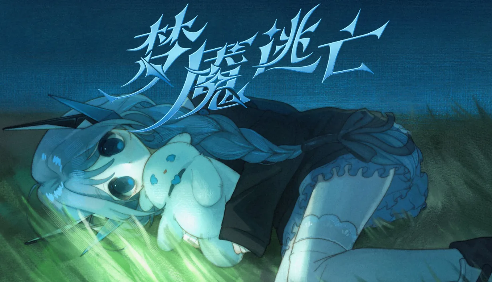

At a glance一览一覽概要En bref
- Genre类型類型ジャンルGenre
- Psychological thriller with a yuri thread · multiple endings百合向心理惊悚 · 多结局百合向心理驚悚 · 多結局百合要素のあるサイコスリラー · マルチエンディングThriller psychologique, trame yuri · fins multiples
- Structure结构結構構成Structure
- Two interwoven timelines: the present, full of gaps, and the past, recovered through a diary and dreams双线交织：充满空白的现在，与靠日记和梦境找回的过去雙線交織：充滿空白的現在，與靠日記和夢境找回的過去2 本の時間軸が交差：空白だらけの現在と、日記や夢を通して取り戻す過去Deux temporalités entrelacées : un présent plein de trous et un passé retrouvé par un journal et des rêves
- Choices选择選擇選択Choix
- Choices accumulate, and the final attitude at the lake picks the ending. A hidden ending unlocks on a second playthrough.选择会不断累积，最后在湖边的态度决定结局。二周目解锁隐藏结局。選擇會不斷累積，最後在湖邊的態度決定結局。二週目解鎖隱藏結局。選択は積み重なり、最後に湖のほとりで取る態度がエンディングを決めます。2 周目で隠しエンディングが解放されます。Les choix s’accumulent, et l’attitude finale au bord du lac décide de la fin. Une fin cachée se débloque en deuxième partie.
- Builds版本版本ビルドVersions
- Five WebGAL web builds so far, used for playtesting目前已有五个 WebGAL 网页版本，用于试玩测试目前已有五個 WebGAL 網頁版本，用於試玩測試これまでに WebGAL のウェブビルドを 5 つ制作し、プレイテストに使用Cinq versions web WebGAL à ce jour, utilisées pour les tests
- Status状态狀態ステータスStatut
- Steam page live (developer: deertube), release date to be announcedSteam 页面已上线（开发者：deertube），发售日期待定Steam 頁面已上線（開發者：deertube），發售日期待定Steam ページ公開済み（開発：deertube）、発売日は未定Page Steam en ligne (développeur : deertube), date de sortie à venir
Design notes设计笔记設計筆記設計メモNotes de conception
- The player learns at Chu-Ling’s pace. Present-day scenes have holes; the past comes back through the diary and recurring dreams of thunder, the lake and a figure seen from behind.
- Endings are interpretations, not fail states. Each one is a different answer to the same question: how to understand Xiaoxue’s love.
- Recurring symbols hold the branches together. The mirror, the lake, the sketchbook, the storm, hands and an umbrella return in every ending with a different meaning.
- Echoed lines. A few lines of dialogue recur across endings and change meaning with context.
- 玩家和初苓同步得知真相。现在的场景处处是空白；过去则通过日记，以及反复出现的雷声、湖水和一个模糊背影的梦境一点点回来。
- 结局是诠释，而不是失败。每个结局都是对同一个问题的不同回答：如何理解小雪的爱。
- 反复出现的意象把各条分支串在一起。镜子、湖水、画册、雷雨、手和那把伞，在每个结局里都会再次出现，含义却各不相同。
- 台词呼应。几句台词会在不同结局里重复出现，随语境不同而改变含义。
- 玩家和初苓同步得知真相。現在的場景處處是空白；過去則透過日記，以及反覆出現的雷聲、湖水和一個模糊背影的夢境一點點回來。
- 結局是詮釋，而不是失敗。每個結局都是對同一個問題的不同回答：如何理解小雪的愛。
- 反覆出現的意象把各條分支串在一起。鏡子、湖水、畫冊、雷雨、手和那把傘，在每個結局裡都會再次出現，含義卻各不相同。
- 臺詞呼應。幾句臺詞會在不同結局裡重複出現，隨語境不同而改變含義。
- プレイヤーは初苓と同じ速さで真実を知る。現在の場面には空白があり、過去は日記と、雷鳴・湖・ぼやけた後ろ姿が繰り返し現れる夢を通して戻ってきます。
- エンディングは失敗ではなく解釈。どれも同じ問い——小雪の愛をどう受け止めるか——への異なる答えです。
- 繰り返し現れるモチーフが分岐をひとつに束ねる。鏡、湖、スケッチブック、雷雨、手、そして傘が、どのエンディングにも違う意味で戻ってきます。
- 台詞の反響。いくつかの台詞が複数のエンディングで繰り返され、文脈によって意味が変わります。
- Le joueur apprend au rythme de Chu-Ling. Les scènes du présent sont trouées ; le passé revient par le journal et par des rêves récurrents de tonnerre, de lac et d’une silhouette vue de dos.
- Les fins sont des interprétations, pas des échecs. Chacune répond autrement à la même question : comment comprendre l’amour de Xiaoxue.
- Des symboles récurrents relient les branches. Le miroir, le lac, le carnet de croquis, l’orage, les mains et un parapluie reviennent dans chaque fin avec un sens différent.
- Répliques en écho. Quelques répliques reviennent d’une fin à l’autre et changent de sens selon le contexte.
Builds版本版本ビルドVersions
The story has been prototyped through five WebGAL builds on this site, from engine tests to the current Chinese build with the prologue and first two chapters. The latest one is playable in the browser; older builds are in the archive.
这个故事在本站上经历了五个 WebGAL 版本的原型迭代，从最初的引擎测试，到目前包含序章和前两章的中文版本。最新版本可以直接在浏览器里试玩；更早的版本收录在归档中。
這個故事在本站上經歷了五個 WebGAL 版本的原型迭代，從最初的引擎測試，到目前包含序章和前兩章的中文版本。最新版本可以直接在瀏覽器裡試玩；更早的版本收錄在歸檔中。
この物語は、このサイト上で 5 つの WebGAL ビルドを経て試作してきました。エンジンのテストから、序章と最初の 2 章を収めた現在の中国語版まで。最新版はブラウザでプレイでき、以前のビルドはアーカイブにあります。
L’histoire a été prototypée à travers cinq versions WebGAL sur ce site, des tests du moteur jusqu’à la version chinoise actuelle avec le prologue et les deux premiers chapitres. La dernière se joue dans le navigateur ; les plus anciennes sont dans l’archive.
The design doc maps every route and ending, including the hidden one — read it after playing if you’d rather not be spoiled.
企划书里画出了所有路线和结局，包括隐藏结局——不想被剧透的话，建议玩过之后再看。
企劃書裡畫出了所有路線和結局，包括隱藏結局——不想被劇透的話，建議玩過之後再看。
企画書にはすべてのルートとエンディング（隠しエンディングを含む）が載っています。ネタバレを避けたい方はプレイ後にどうぞ。
Le document de conception détaille chaque parcours et chaque fin, y compris la fin cachée — à lire après avoir joué si vous voulez éviter les spoilers.
Related相关相關関連Voir aussi
Trafalgar Labyrinth — the transmedia escape game my team built under the Nightmare Escape name for VDES 34444.
Trafalgar Labyrinth——我们小组以 Nightmare Escape 为名、为 VDES 34444 课程制作的跨媒介解谜游戏。
Trafalgar Labyrinth——我們小組以 Nightmare Escape 為名、為 VDES 34444 課程製作的跨媒介解謎遊戲。
Trafalgar Labyrinth——私たちのチームが Nightmare Escape の名で VDES 34444 のために制作したトランスメディア脱出ゲーム。
Trafalgar Labyrinth — le jeu d’évasion transmédia que mon équipe a réalisé sous le nom Nightmare Escape pour VDES 34444.